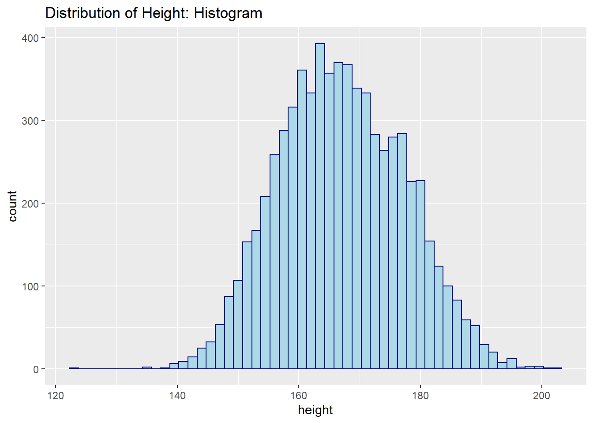
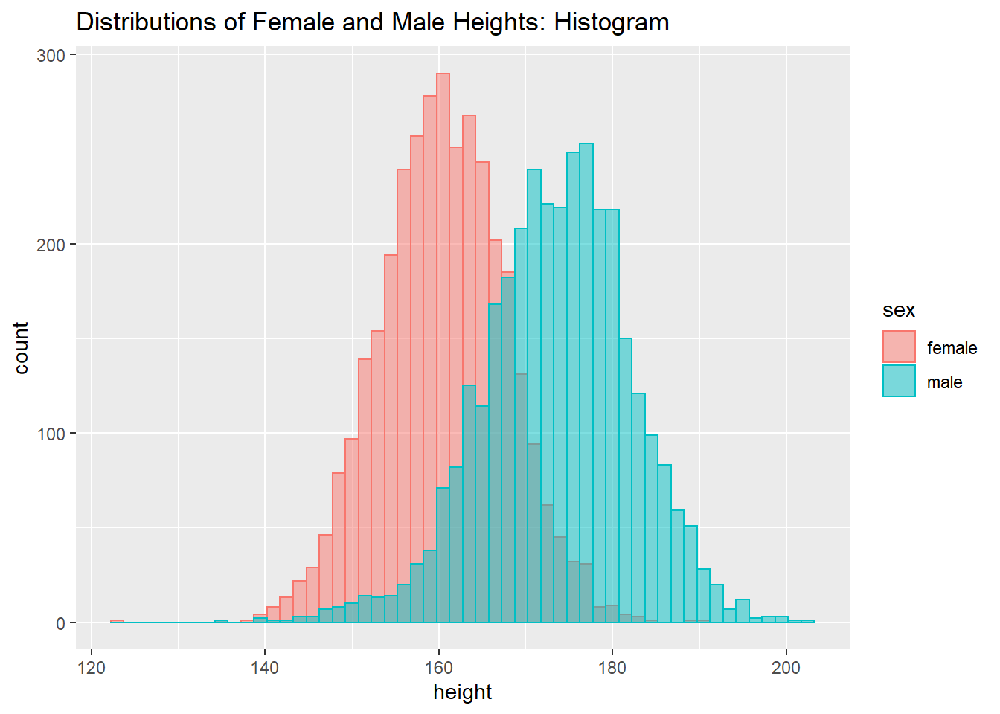
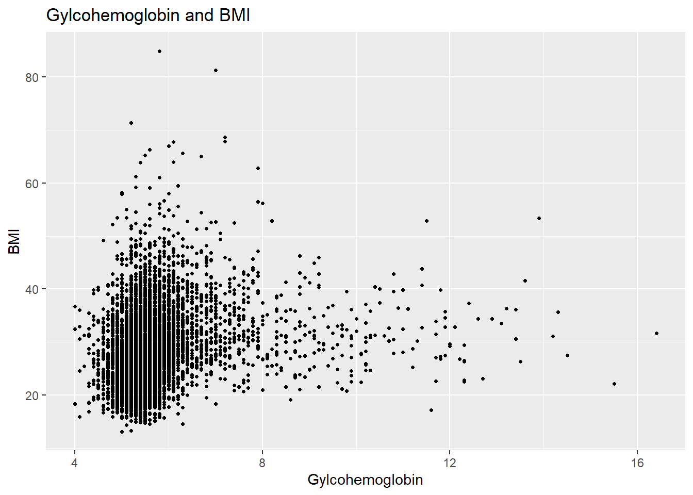
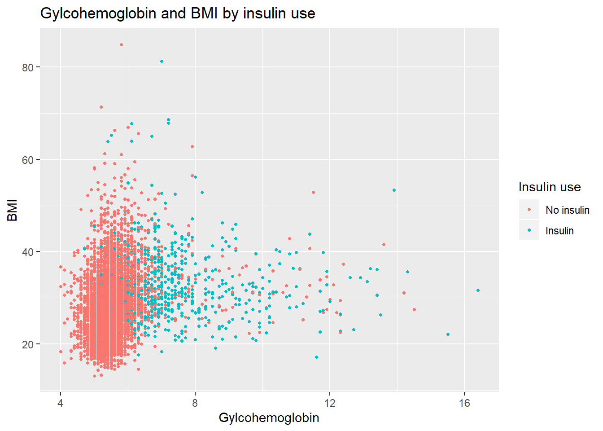
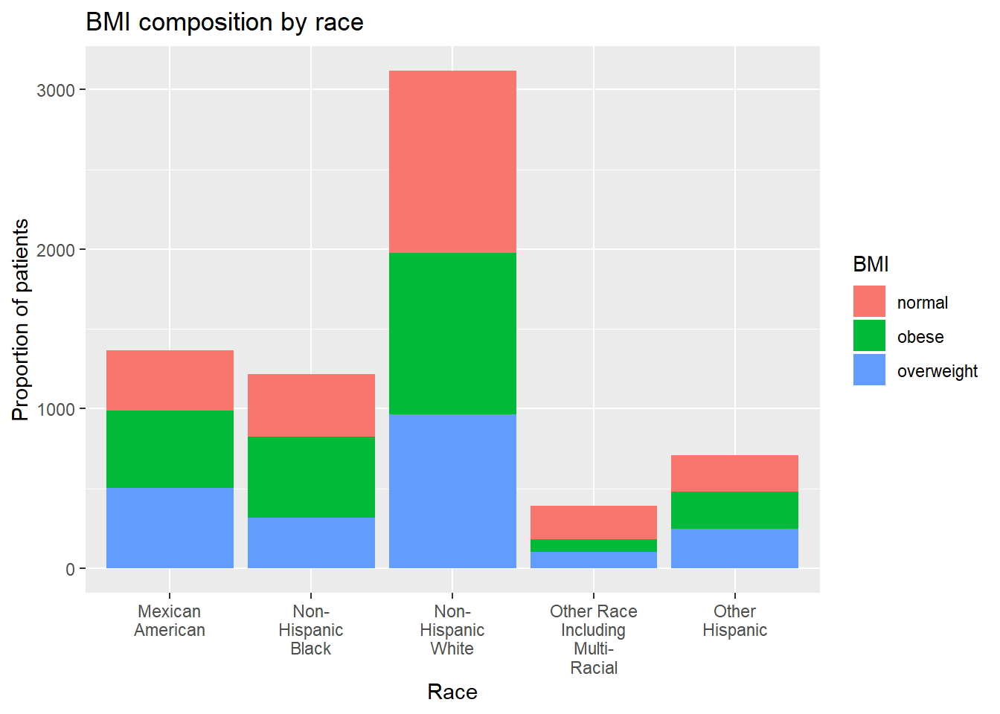

This blog aims at introducing the “ggplot2” package and showing the power using “ggplot2” to achieve visualization. As John Tukey says, “The greatest value of a picture is when it forces us to notice what we never expected to see.”. In this blog, I will show you how to use “ggplot2” to make pictures and how to interpret the pictures.
In this blog, I use NHANES data — "“nhgh.tsv”, which is downloaded from http://biostat.mc.vanderbilt.edu/wiki/Main/DataSets, to show visualization and interpretation.
library(tidyverse)## -- Attaching packages -------------- tidyverse 1.2.1 --## √ ggplot2 3.2.1 √ purrr 0.3.2
## √ tibble 2.1.3 √ dplyr 0.8.3
## √ tidyr 0.8.3 √ stringr 1.4.0
## √ readr 1.3.1 √ forcats 0.4.0## -- Conflicts ----------------- tidyverse_conflicts() --
## x dplyr::filter() masks stats::filter()
## x dplyr::lag() masks stats::lag()library(ggplot2)data <- read_tsv("nhgh.tsv") # load the data## Parsed with column specification:
## cols(
## .default = col_double(),
## sex = col_character(),
## re = col_character(),
## income = col_character()
## )## See spec(...) for full column specifications.names(data) # get variables of data## [1] "seqn" "sex" "age" "re" "income" "tx" "dx"
## [8] "wt" "ht" "bmi" "leg" "arml" "armc" "waist"
## [15] "tri" "sub" "gh" "albumin" "bun" "SCr"Meaning of the variables: seqn: individual’s sequence number; sex: sex of individuals; age: age of individuals; re: race/ethnicity of individuals; income: income of individuals; tx: insulin use of individuals; wt: weight of individuals; ht: height of individuals; bmi: BMI level of individuals; leg, arml, armc, waist, tri, sub: measured data of individuals; gh: gylcohemoglobin levele of individuals; albumin: albumin level of individuals; bun: blood urea nitrogen level of individuals; SCr: Scr level of individuals.
Histogram is a powerful visualization tool. It is an accurate representation of the distribution of numerical data. It shows the probability of a variable. The shape or the pattern of the histogram can be “symmetric”, “skewed left” or “right”, “unimodal”, “bimodal” or “multimodal”.
Now, let us use ggplot2 to make a histogram of the data. We will use “geom_histogram” to make the plot. In this part, we will use variable “ht”, which represents the heights of individuals.
data %>% # use data
ggplot(aes(x = ht)) +
geom_histogram(binwidth = 1.5, color = "darkblue", fill = "lightblue") + # plot the histogram
labs(title = "Distribution of Height: Histogram") +
xlab("height") # change lab and title
From this histogram, we can see that it is relatively symmetric. And the height range of this data is [120, 200]. Height of 165cm hs the most count number.
Now, we make some changes to the histogram, to show the distribution of height by sex.
data %>% # use data
ggplot(aes(x = ht, color = sex, fill = sex)) +
geom_histogram(binwidth = 1.5, alpha = 0.5, position = "identity") + # plot the histogram by sex
labs(title = "Distributions of Female and Male Heights: Histogram") +
xlab("height") # change lab and title
From this histogram, we can see the distribution of height for female (pink) and male (blue). From this histogram, we can make comparisons. The heights of females are generally smaller than the heights of males. The heights of females appears centered around 160. The heights of males appears to be centered around 173. The distribution of male heights appears to have more variability (spread) than that of females.
Thus, we can see that histogram can used to analyse the distrbution of a variable. But how about analysing the relationship between more than one variables? We can use scatterplot!
Scatterplot is a type of plot or mathematical diagram using Cartesian coordinates to display values for typically two variables for a set of data. Also, we can change the points’ color/shape/size to compare more vaiables. Each point in the scatterplot contains the information of many variables. This is a useful plot to gain information.
Now, let us use “geom_point”, to make a scatterplot of gylcohemoglobin versus BMI.
data %>% # use data
ggplot(aes(x = gh, y = bmi)) +
geom_point(pch = 20) + # make the sactterplot of gylcohemoglobin versus BMI
labs(title = "Gylcohemoglobin and BMI",
x = "Gylcohemoglobin",
y = "BMI") #change labs and title
In this scatterplot, we can see different individuals’ gylcohemoglobin level and BMI. Most points lie in the lower left corner, which means they have relatively low level of gylcohemoglobin and BMI. But it seems the comparison is not so clear. So, we decide to use color of points to strengthen the effect of contrast.
Now, we use make a scatterplot of gylcohemoglobin versus BMI colored by insulin use.
data %>% # use data
mutate(tx = fct_recode(factor(tx), `No insulin` = "0", Insulin = "1")) %>% # redefine tx (the insulin use)
ggplot(aes(x = gh, y = bmi, col = tx)) +
geom_point(pch = 20) + # make the scatterplot of gylcohemoglobin versus BMI colored by insulin use
labs(title = "Gylcohemoglobin and BMI by insulin use",
x = "Gylcohemoglobin",
y = "BMI",
col = "Insulin use") # change labs and title
From the sactterplot, we can see that individuals who use insulin have higher gylcohemoglobin values and higher variability than those with no insulin at the same levels of BMI. There are a few outliers in the plot (i.e. some individuals have abnormally high BMI values and low gylcohemoglobin). The is a right skew in gylcohemoglobin distribution and it is mostly due to individuals who are taking insulin. However, not all individuals who are taking insulin have high levels of gylcohemoglobin.
After introducing histogram and scatterplot, we want to talk about making barplot, which is also an effective tool for us to analyse data. bar chart presents categorical data with rectangular bars with heights or lengths proportional to the values that they represent. It shows comparisons among discrete categories.
Now, let us make a bar chart showing the BMI composition in each race/ethnicity. The BMI groups are defined as follows: normal (BMI ≤ 25), overweight (25 < BMI ≤ 30), and obese (BMI > 30).
data %>% # use data
mutate(bmicat = ifelse(bmi <= 25, "normal", ifelse(bmi > 30, "obese", "overweight"))) %>% # create new variable to show BMI level
ggplot(aes(str_wrap(re, 10), fill = bmicat)) +
geom_bar(stat = "count") + # make bar chart of the BMI composition in each race/ethnicity
labs(title = "BMI composition by race",
x = "Race",
y = "Proportion of patients",
fill = "BMI") # change labs and title
From this bar chart, we can see that the BMI distribution is different across racial groups. Among Mexican Americans, there are more obese and more overweight patients than patients with normal BMI. Among non-hispanic black patients, the number of obese patients are greater than the number of normal BMI patients. For other hispanic patients, the distribution of normal, obese, and overweight patients are quite similar. For other race including multi-racial patients, there are more patients with normal BMI than obese or overweight patients.
From this blog, we hope you can find the power of ggplot2 and study some techniques to help you interpret the data. GGplot2 is really a useful tool and we still need to explore it.